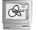

ISO 8879 SGML,
structured documents, markup languages.

TeX
están situadas actualmente en el servidor WWW del Departamento
de Matemática Aplicada 1 de la Universidad
de Sevilla (Spain), situado en la Escuela
Técnica Superior de Arquitectura al que agradecemos profundamente
este servicio. Se ruega comunicar las deficiencias por electrocorreo a
webmaster@apolo.us.es.

|
|
 |  | ||
Estadísticas de acceso |
Visitantes |
Visitantes |